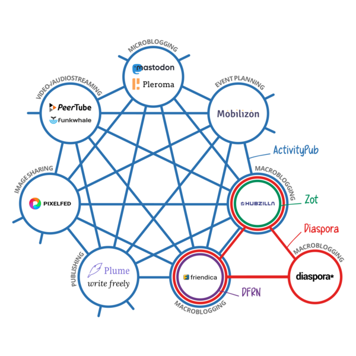

「プラットフォームとフェデレーションとの競争」

念のため予防線を張っておくと，私は日本で Mastodon が台頭し始めた2017年春に「GW 過ぎたらみんな忘れてるに100カノッサ」と書いて，見事に賭けに負けた人間である。 まぁ，私自身はつい最近まで本当に忘れていたのだが（笑）
というわけで， Mastodon マンセー！ とか言うつもりはないのであしからず。
ActivityPub 連合
Mastodon アカウントを復活させてから，あちこち覗いて回っている。 特に以下の記事は2017年よりあとの（特に日本語圏での）状況を知るのに役に立った。 ありがたや 🙇
この記事にも出てくる ActivityPub の W3C 勧告（Recommendation）は 2018-01-23 にリリースされている。

これに先立ち，2017年秋ごろには Mastodon や PeerTube でも実装されていたようだ。 更に2018年以降 Misskey, Pleroma, Pixelfed といったあたりが対応をはじめた。 更に更に，昨今の「Twitter お家騒動」を受けて Tumblr が ActivityPub に対応すると表明し，我らが Flickr も検討に入ったらしい。
Was just discussing ActivityPub earlier this week internally. Should we add to @Flickr? (No promises, just thinking [err, Tweeting] out loud to gauge interest.) It might be right up our alley, though… https://t.co/MsrPhlwB3Q
— Don MacAskill (@DonMacAskill) November 22, 2022
正直に言って「Flickr 対応するかも」というのは心が揺れた。 もしこれが実現するなら SNS 活動の軸足を Fediverse へ移してもいいかもしれない。
EFF による Mastodon/ActivityPub/Fediverse 解説
昨今の状況を受けて EFF (Electronic Frontier Foundation) も解説記事を出した。
- Leaving Twitter’s Walled Garden | Electronic Frontier Foundation
- The Fediverse Could Be Awesome (If We Don’t Screw It Up) | Electronic Frontier Foundation
- Is Mastodon Private and Secure? Let’s Take a Look | Electronic Frontier Foundation
Fediverse とは federation と universe を組み合わせた造語だそうな。 たとえば Mastodon はそれ自体が連合（federation）型の分散システムだが，そうしたサービス同士が更に緩くフラットに結びついた状態を指すらしい。

{kind=link}
これら連合型システムを結びつける技術要素のひとつが ActivityPub というわけだ。 ぶっちゃけ，どこぞの FinTech 山師が叫ぶ Web3 より，こっちのほうがよほど次期 Web ぽいよな（笑）
EFF の解説記事では従来の Facebook や Twitter といったサービスを「プラットフォーム」あるいは「中央集権」型に分類し Fediverse と対置しているのが面白い。 Mastodon 等は単なる「代替サービス」ではないということだ。
連合には中央機関が存在しないため、Twitter独自の認証バッジなどの複数の機能はまったく意味をなさない。「認証（verified）」に近いものとしては、自分のプロフィールに特定のハイパーリンクを掲載し、外部のウェブページやリソースを管理していることをインスタンスに証明するというものがある。
fediverseは分散型であるため、投稿を管理したり、アカウントを削除する単一の権限はなく、すべてはユーザとサーバに委ねられている。Mastodonのユーザは一般に、投稿にコンテンツ警告マークをつけている。これは本当にセンシティブなコンテンツ（たとえば、戦争のニュースに関するコンテンツ警告）のためだけではなく、タイムライン上の投稿の足跡を最小化するためにも用いられている。また、ハッシュタグと合わせて、センシティブではない投稿の分類やキュレーションにも用いられている（たとえば、コンテンツ警告：「うちの猫 #pets」）。
その上で既存プラットフォームに対して辛辣な評価を下す。
数週間前まで、ほとんどのソーシャルメディアユーザは“誰に支配されるか”しか選びようがなかった。現在、オンライン・ユーザが抱える多くの問題は、そうした集中によって生み出されている。
プライバシーを例に取ろう。既存のプラットフォームは、プラットフォーム側が提示する条件を呑むか、アカウントを削除するかというオール・オア・ナッシングの二者択一をユーザに迫っている。設定の奥深くに埋もれたプライバシー・ダッシュボードで多少の調整はできるようになったが、すべてのチェックボックスを外しても大手サービスはあなたのデータの収集をやめようとはしない。主要プラットフォームに依存することによって、我々のプライバシー、セキュリティ、表現の自由の自律性が大幅に損なわれているのだ。
つい最近まで、インターネットの終焉を想像することは、テック企業の終焉を想像するよりも簡単だった。無責任な巨大企業が支配するシステムのもとで暮らすことの問題は、避けられないように思えわれた。だが、こうした中央集権型プラットフォームは成長を停滞させ、Twitterは無様に崩壊しつつある。Twitterの崩壊、混乱は、これが最後ではないだろう。
こうしたプラットフォーム型サービスに対する失望感（絶望感？）が今回の「Twitter お家騒動」より派生する諸々の出来事の背景にあるのかもしれない。 そして最後に EFF はこう断ずるのである。
善き独裁者を選んでも、独裁体制を修正することはできない
一方で Fediverse に対しても
はっきりさせておこう。連合（federated ）によって、これまでの問題が魔法のようにたちどころに解決するわけではない。もし連合型ソーシャルメディアが既存の中央集権型ソーシャルメディアよりも優れているのだとしたら、それはそこに集う人たちが良いものを作りあげようと意識的に選択したからであり、技術的決定論によるものではない。オープンで分散化されたシステムは、より良いオンライン世界に向けた新たな選択肢を提供する。だが、その選択をするのは我々自身なのである。
と釘をさしている（強調は私がやりました）。 その上で「連合システムの運用者と利用者に期待される選択肢」として以下を挙げている。
- コンテンツ・モデレーションに関するサンタクララ原則を採用する
- コミュニティ／ローカル・コントロール
- コンテンツ・モデレーションのイノベーション
- 無数のアプリケーション
- リミックス可能性
- 多様な資金援助モデル
- グローバルなアクセシビリティ
- 政府からの干渉への抵抗／ユーザの側に立つこと
- 真の連合
- 相互運用性と次の囲い込みの阻止
- 反競争的行為の阻止
- ポータビリティ
- 委任可能性（delegability）
詳しくは元記事を参照のこと。
最後の「反競争的行為の阻止」「ポータビリティ」「委任可能性」3つは “Embrace, Extend, and Extinguish" (EEE)” のカウンタかな。 つか「取り込み、拡張し、抹殺する」とか物騒なフレーズがあるんだな（笑）
「プラットフォームとフェデレーションとの競争」
コンピュータおよびコンピュータ・システムの歴史は集中と分散の繰り返しである。 ネットも同じ。 プラットフォーム間の覇権争いに巻き込まれてウンザリしたユーザが緩い連合型システムに流れるのも自然なことのように思える。
しかし，これまで見たように Mastodon は Twitter の代替にはなりそうもない。 Twitter から Mastodon に逃げたユーザが，自分たちの「Twitter 文化」を振りかざして迷惑をまき散らしているという話もちょいちょい聞く1。 リアルの「移民問題」と似たような話がネットでも出てくるというのは興味深い。
Fediverse が「素晴らしいもの」になるか否かが「“私たち”次第」ということは，言い方を変えれば Fediverse は属人性の強い壊れやすいシステムであるということだ。
EFF の解説記事はこう締めくくる。
既存のソーシャルメディアと、それに変わる連合型メディアの間には常にトレードオフが存在する。プラットフォームとフェデレーションとの競争という新たな火種は、新たなイノベーションとオンラインにおける我々の自律性の向上という2つの可能性を秘めている。
ここで EFF が「競争（competition）」と言っていることには意味があると思う。
「文化とは文化の
ブックマーク
参考文献

- もうすぐ絶滅するという開かれたウェブについて 続・情報共有の未来
- yomoyomo (著)
- 達人出版会 2017-12-25 (Release 2019-03-02)
- デジタル書籍
- infoshare2 (tatsu-zine.com)
- 評価
WirelessWire News 連載の書籍化。感想はこちら。祝 Kindle 化！
reviewed by Spiegel on 2018-12-31

- イノベーション 悪意なき嘘 (双書 時代のカルテ)
- 名和 小太郎 (著)
- 岩波書店 2007-01-11
- 単行本
- 4000280872 (ASIN), 9784000280877 (EAN), 4000280872 (ISBN)
- 評価
「両用技術とはどのようなものか。その核心には「矛と楯の論理」がある」（まえがき「予断・診断・独断 そんなばかな」より）

- 著作権は文化を発展させるのか: 人権と文化コモンズ
- 山田 奨治 (著)
- 人文書院 2021-07-29 (Release 2021-07-29)
- Kindle版
- B099RTG3J7 (ASIN)
- 評価
著作権を「ユーザーの人権」という観点から捉え直す。その後 文化→コモンズ→文化コモンズ と進み，本当の意味で「文化の発展に寄与する」とはどういうことか考察していく。
-
私もちゃんと振る舞えているか自信がない。昔の人は言いました。「3年ROMれ」と。 ↩︎